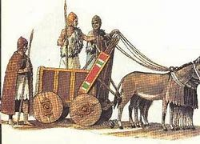
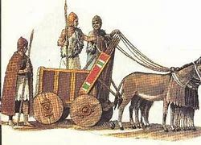
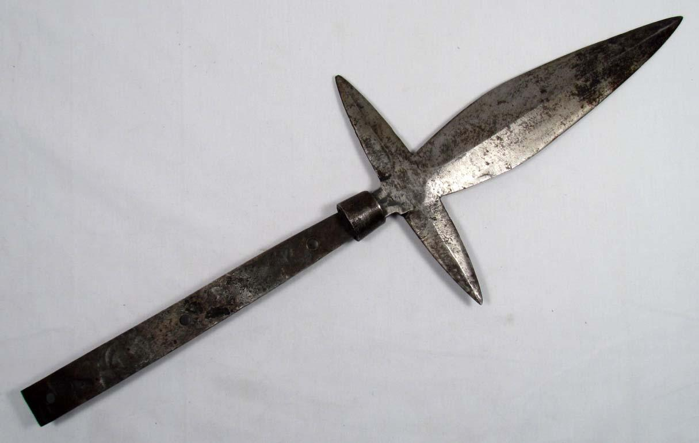
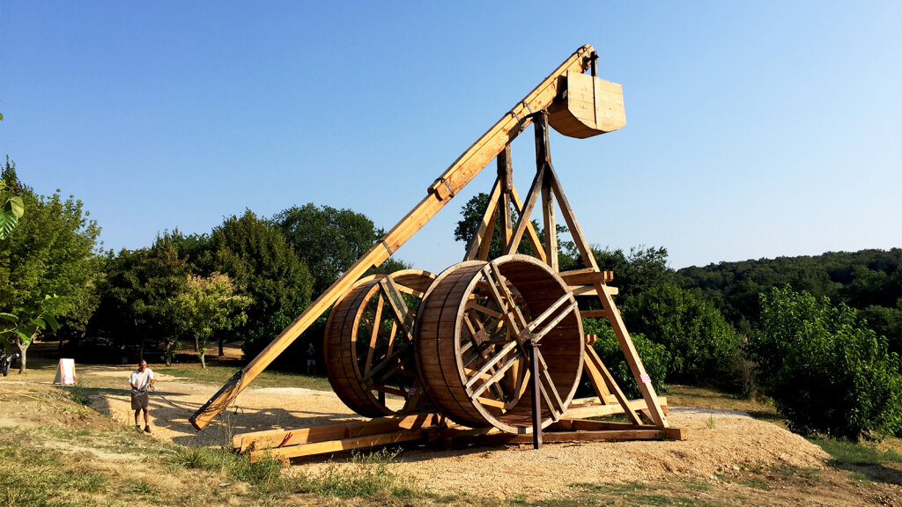
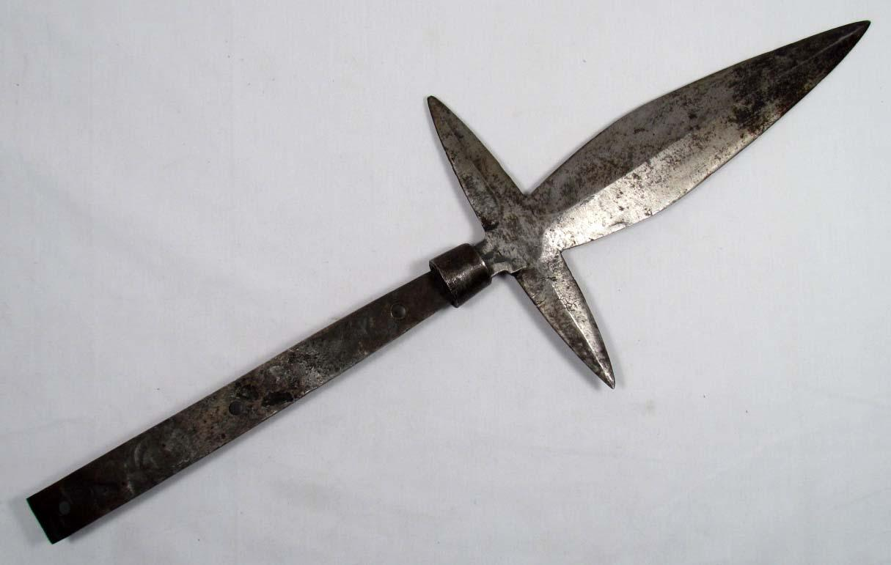
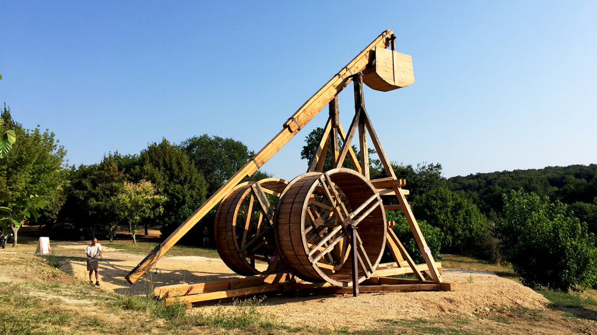

Classical and Medieval Weaponry
Swords
The first swords were invented in the Bronze Age, around 1600 BC. Contrary to popular belief, a sword was probably not the primary weapon of many soldiers and infantry. They actually mostly used spears, as they had a much longer range. Swords were kept on soldiers as a secondary weapon, mainly for when the enemy got too close.
Crossbows
The first Crossbows are believed to have been invented between 7th to 5th BC, probably in China. They were incredilby powerful, being able to puncture and penetrate armour, also with a much long range than a traditional bow. They were very effective against heavily armoured troops, therefore allowing less armoured to advanced against a better armed foe. Unlike bows, these don't shoot arrows, instead they shoot heavy metal bolts at enemies. Also, the string is not hand drawn, unlike bows, as it required much force, so some sort of mechanism is used to retract and then release the string for firing.
Chariots
A chariot is a cart, driven by a charioteer, and usually pulled by horses. It would often carry several troops along onto the chariot, usually spearmen and archers. They were known for their mobility and their ability to charge into the enemies' front line, flanks and rear, causing heavy damages and disarray.
Introduction of Cavalry
A new type of warfare was invented around 900BC, cavalry. Orinally, horses were used for chariots but nomads of the Great Steppe mastered this type of warfare on horses, taking advantage of the horse's mobility. With a large number of horses in the steppe, there were even empires built upon these terrifying horse armies, like the Scythians, the Huns and the famous Mongol Horde. Cavalry was popular and soon overtook the effectiveness of chariots as the chariots were hard to maintain and are easily broken, whereas a horse can easily weave around spaces and provided much more speed. Although European knights were very effective using lances and close-ranged weapons, whilst equipped with heavy armour, much earlier before, the horsemen of the Great Eurasian Steppe, were very lightly armoured, making them vulnerable to injured badly if hit, but the light armour made up as it made them much faster. Many of nomadic horse armies also wielded bows whilst riding, quite rare in Europe, and it required a lot of skills as you had to be accurate and use a bow effectively whilst controlling and riding a horse.
Pikes and Halberds
The pike and halberd were invented around the 5th century. They are basically a much longer spear, around 3 to 7 metres long. One of the famous usage was by the Macedonian troops, the Macedonian Sarissas, commanded by Alexander the Great's father, Phillip II of Macedon. These weapons were crucial for the infamous Phalanx Formation, invented by Phillip II.
Siege Weaponry
Siege weapons were used mainly for two reasons, to destroy an enemy city's walls or to get over the walls. Some examples of siege weaponry include catapults, trebuchets, mangonels, all three used to destroy walls by shooting a projectile at the walls, battering rams, used to destroy walls by ramming a log, sometimes with a metal at the head, at a section of the walls, creating an oppurtunity for troops to break in, and siege towers, which were designed to be tall enough to reach atop the enemy walls, allowing troops to just attack onto the walls.
 


 


